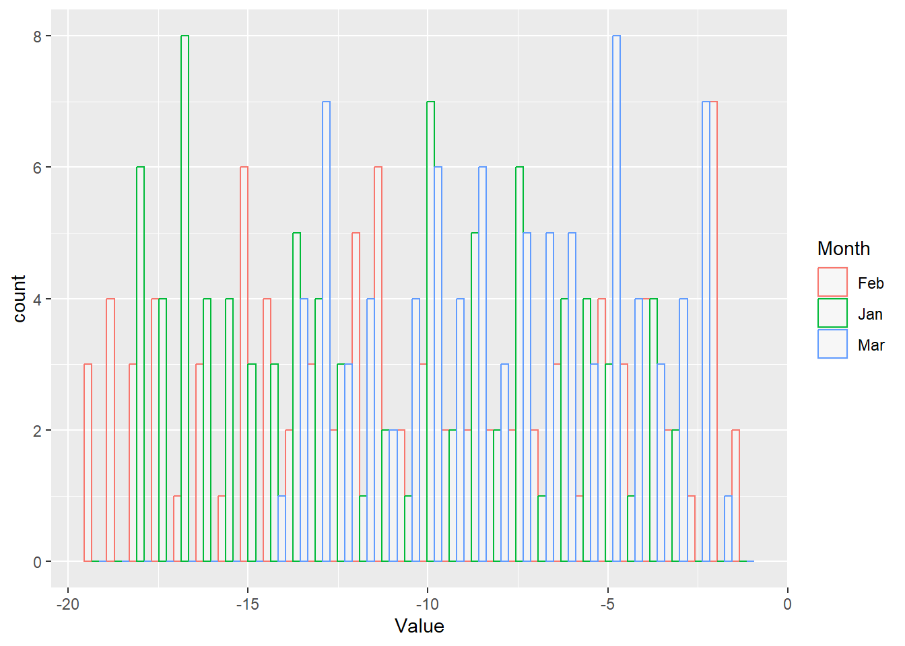
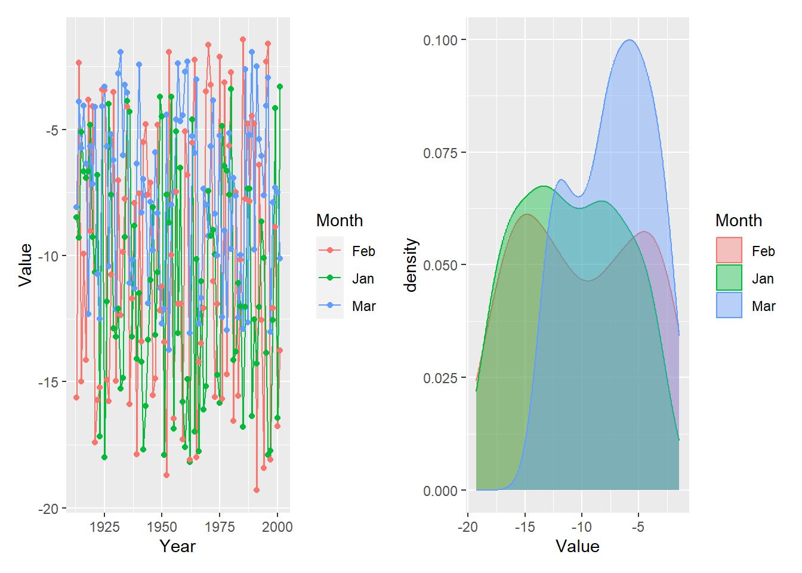
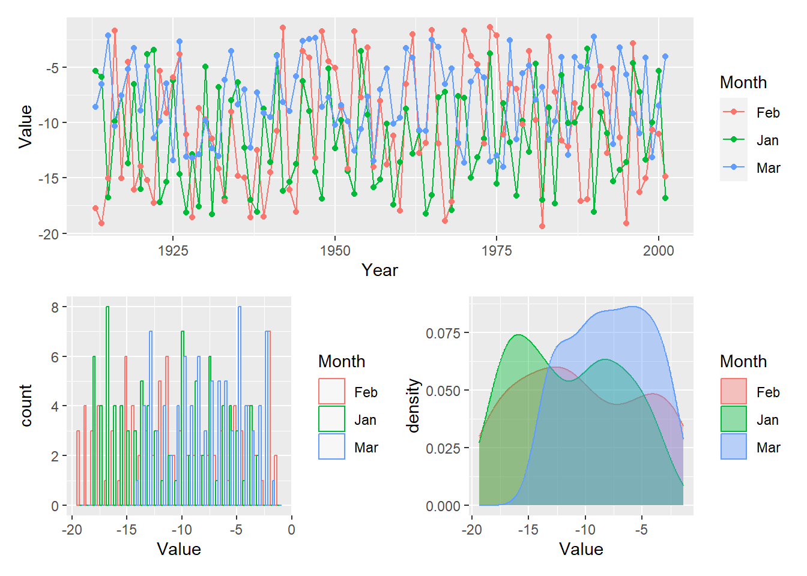
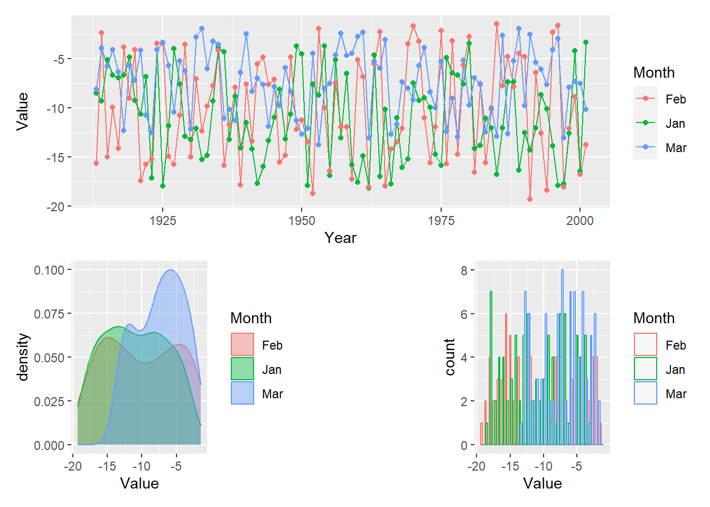

###############################################################
#~~~ Load required libraries
lib_names=c("ggplot2","gridExtra","utils","tidyr","cowplot", "RColorBrewer")
# If you see a prompt: Do you want to restart R prior to installing: Select **No**.
# Install all necessary packages (Run once)
# invisible(suppressMessages
# (suppressWarnings
# (lapply
# (lib_names,install.packages,repos="http://cran.r-project.org",
# character.only = T))))
# Load necessary packages
invisible(suppressMessages
(suppressWarnings
(lapply
(lib_names,library, character.only = T))))4.1 Import libraries and create sample dataset
For this section, we will use the ggplot2, gridExtra, utils, and tidyr packages. gridExtra and cowplot are used to combine ggplot objects into one plot and utils and tidyr are useful for manipulating and reshaping the data. We will also install some packages here that will be required for the later sections. You will find more information in the sections to follow.
In more day-to-day use, you will see yourself using a simpler version of these commands, such as, if you were to install the “ggplot2”,“gridExtra” libraries, you will type:
# To install the package. Install only once
install.packages("ggplot2")
# To initialize the package. Invoke every time a new session begins.
library(ggplot2)
Similarly, again for gridExtra ,
install.packages("gridExtra")
library(gridExtra)
For this exercise, let us generate a sample dataset.
###############################################################
#~~~ Generate a dataset containing random numbers within specified ranges
Year = seq(1913,2001,1)
Jan = runif(89, -18.4, -3.2)
Feb = runif(89, -19.4, -1.2)
Mar = runif(89, -14, -1.8)
January = runif(89, 1, 86)
dat = data.frame(Year, Jan, Feb, Mar, January)4.2 Basics of ggplot
Whereas base R has an “ink on paper” plotting paradigm, ggplot has a “grammar of graphics” paradigm that packages together a variety plotting functions. With ggplot, you assign the result of a function to an object name and then modify it by adding additional functions. Think of it as adding layers using pre-designed functions rather than having to build those functions yourself, as you would have to do with base R.
l1 = ggplot(data=dat, aes(x = Year, y = Jan, color = "blue")) + # Tell which data to plot
geom_line() + # Add a line
geom_point() + # Add a points
xlab("Year") + # Add labels to the axes
ylab("Value")
# Or, they can be specified for any individual geometry
l1 + geom_line(linetype = "solid", color="Blue") # Add a solid line
l1 + geom_line(aes(x = Year, y = January)) # Add a different data set
# There are tons of other built-in color scales and themes, such as scale_color_grey(), scale_color_brewer(), theme_classic(), theme_minimal(), and theme_dark()
# OR, CREATE YOUR OWN THEME! You can group themes together in one list
theme1 = theme(
legend.position = "none",
panel.background = element_blank(),
plot.title = element_text(hjust = 0.5),
axis.line = element_line(color = "black"),
axis.text.y = element_text(size = 11),
axis.text.x = element_text(size = 11),
axis.title.y = element_text(size = 11),
axis.title.x = element_text(size = 11),
panel.border = element_rect(
colour = "black",
fill = NA,
size = 0.5
)
)4.3 Multivariate plots
For multivariate data, ggplot takes the data in the form of groups. This means that each data row should be identifiable to a group. To get the most out of ggplot, we will need to reshape our dataset.
library(tidyr)
# There are two generally data formats: wide (horizontal) and long (vertical). In the horizontal format, every column represents a category of the data. In the vertical format, every row represents an observation for a particular category (think of each row as a data point). Both formats have their comparative advantages. We will now convert the data frame we randomly generated in the previous section to the long format. Here are several ways to do this:
# Using the gather function (the operator %>% is called pipe operator)
dat2 = dat %>% gather(Month, Value, -Year)
# This is equivalent to:
dat2 = gather(data=dat, Month, Value, -Year)
# Using pivot_longer and selecting all of the columns we want. This function is the best!
dat2 = dat %>% pivot_longer(cols = c(Jan, Feb, Mar), names_to = "Month", values_to = "Value")
# Or we can choose to exclude the columns we don't want
dat2 = dat %>% pivot_longer(cols = -c(Year,January), names_to = "Month", values_to = "Value")
head(dat2) # The data is now shaped in the long format# A tibble: 6 × 4
Year January Month Value
<dbl> <dbl> <chr> <dbl>
1 1913 46.1 Jan -8.48
2 1913 46.1 Feb -15.6
3 1913 46.1 Mar -8.09
4 1914 70.6 Jan -9.29
5 1914 70.6 Feb -2.36
6 1914 70.6 Mar -3.89Line plot
# LINE PLOT
l = ggplot(dat2, aes(x = Year, y = Value, group = Month)) +
geom_line(aes(color = Month)) +
geom_point(aes(color = Month))
l
Density plot
# DENSITY PLOT
d = ggplot(dat2, aes(x = Value))
d = d + geom_density(aes(color = Month, fill = Month), alpha=0.4) # Alpha specifies transparency
d
Histogram
# HISTOGRAM
h = ggplot(dat2, aes(x = Value))
h = h + geom_histogram(aes(color = Month, fill = Month), alpha=0.4,
fill = "white",
position = "dodge")
h
Grid plotting and saving files to disk
There are multiple ways to arrange multiple plots and save images. One method is using grid.arrange() which is found in the gridExtra package. You can then save the file using ggsave, which comes with the ggplot2 library.
# The plots can be displayed together on one image using
# grid.arrange from the gridExtra package
img = grid.arrange(l, d, h, nrow=3)
# Finally, plots created using ggplot can be saved using ggsave
ggsave("grid_plot_1.png",
plot = img,
device = "png",
width = 6,
height = 4,
units = c("in"),
dpi = 600)Another approach is to use the plot_grid function, which is in the cowplot library. Notice how the axes are now beautifally aligned.
img2=cowplot::plot_grid(l, d, h, nrow = 3, align = "v") # "v" aligns vertical axes and "h" aligns horizontal axes
ggsave("grid_plot_2.png",
plot = img2,
device = "png",
width = 6,
height = 4,
units = c("in"),
dpi = 600)5 Using pathwork for combining ggplots
Pathwork works with simple operators to combine plots. The operator | arranges plots in a row. The plus sign + does the same but it will try to wrap the plots symetrically as a square whenever possible. The division i.e. /operator layes a plot on top of another.
#install.packages("patchwork")
library(patchwork)Warning: package 'patchwork' was built under R version 4.3.2
Attaching package: 'patchwork'The following object is masked from 'package:cowplot':
align_plotsl+d
l/ (h+d)`stat_bin()` using `bins = 30`. Pick better value with `binwidth`.
# Try: l/d/h or (l+d)/h
# Make your own design for arranging plots (the # sign means empty space):
design <- "
111
2#3
"
l + d + h + plot_layout(design = design)`stat_bin()` using `bins = 30`. Pick better value with `binwidth`.
Some useful resources
The links below offer a treasure trove of examples and sample code to get you started.
The R Graph Gallery: https://www.r-graph-gallery.com/
R charts: https://r-charts.com/
Excellent resource for combining multiple ggplots: https://r-charts.com/ggplot2/combining-plots/